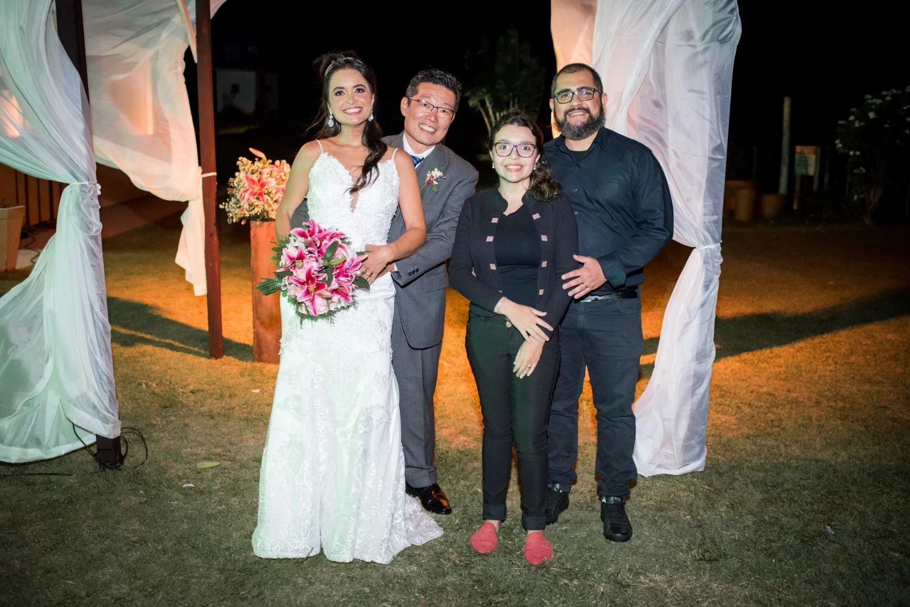
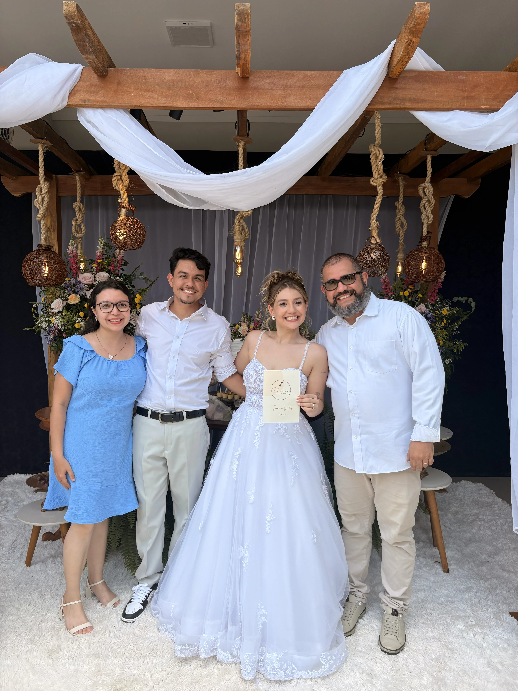
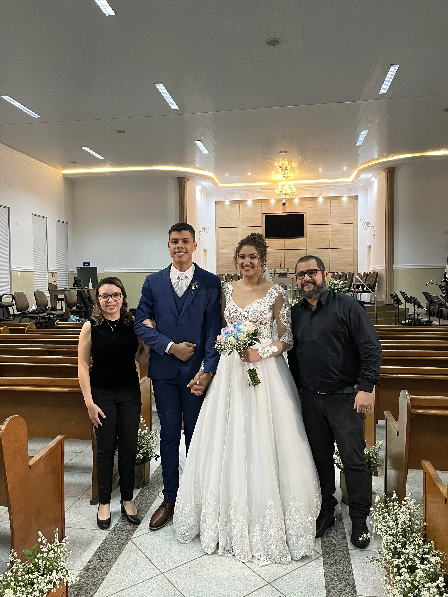
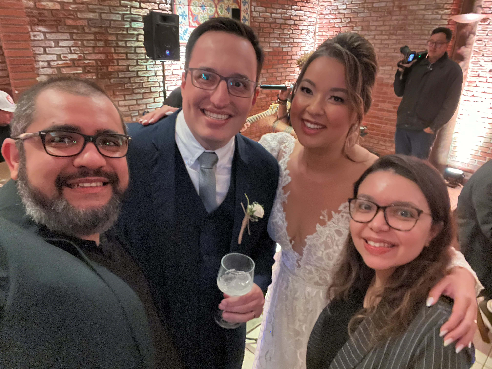
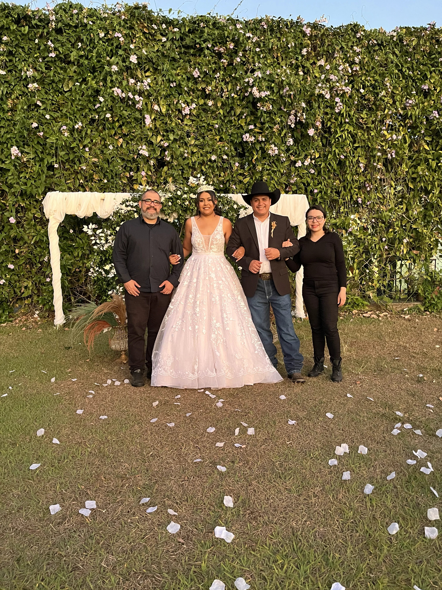
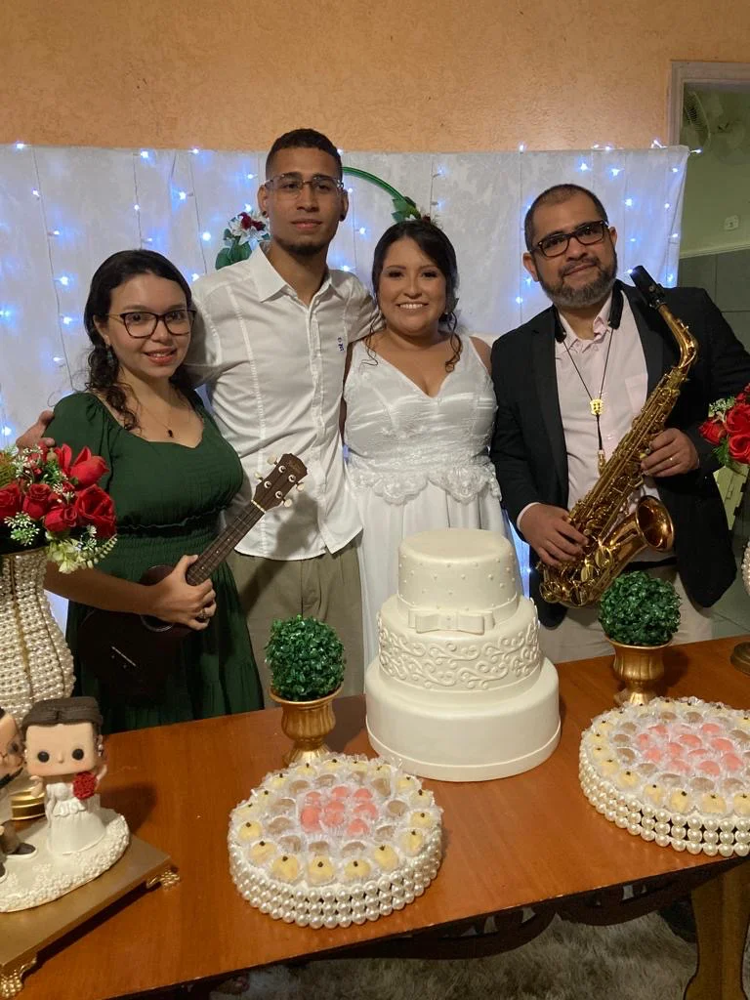

Formação Lite
Uma formação elegante e essencial, ideal para quem busca uma experiência musical sofisticada e equilibrada.
- Instrumento 1: Teclado / Violão
- Instrumento 2: Violino / Saxofone / Flauta / Voz
Música ao vivo para cerimônias religiosas de casamento, com elegância, sensibilidade e emoção.
Solicitar orçamentoA Finesse Agência Musical é especializada em transformar cerimônias religiosas de casamento em experiências únicas e inesquecíveis.
Contamos com músicos profissionais e experientes, preparados para acompanhar cada momento da cerimônia com excelência, elegância e sensibilidade.
Oferecemos aos noivos um repertório musical amplo e cuidadosamente selecionado, reunindo músicas clássicas, religiosas e populares, sempre com possibilidade de personalização para que cada escolha reflita a história e a identidade do casal.
Trabalhamos com diferentes formações musicais, permitindo criar a combinação ideal de instrumentos para cada cerimônia — desde formações mais intimistas até conjuntos completos, com uma sonoridade rica e envolvente.
Além da qualidade musical, cuidamos de toda a estrutura necessária para a apresentação, com equipamentos de som profissionais, modernos e de alta qualidade.
Da primeira nota ao último momento da cerimônia, cada detalhe é preparado para que a música faça parte da memória desse dia para sempre.
A Finesse oferece diferentes formações musicais para que cada casal possa escolher a combinação que melhor representa o estilo e a atmosfera desejada para sua cerimônia.
Uma formação elegante e essencial, ideal para quem busca uma experiência musical sofisticada e equilibrada.
Uma formação mais sofisticada, com maior variedade sonora para acompanhar os diferentes momentos da cerimônia.
Uma formação mais completa, permitindo uma combinação ampla de instrumentos para criar uma experiência musical ainda mais marcante.
Uma formação completa e versátil, pensada para proporcionar uma experiência musical ainda mais rica e envolvente durante a cerimônia.
A formação mais completa da Finesse Agência Musical, ideal para cerimônias que desejam uma sonoridade rica, envolvente e uma experiência musical marcante.
Cada cerimônia é única. Reunimos registros de momentos especiais vividos pela Finesse Agência Musical, traduzindo em imagens a elegância, a emoção e a experiência da música ao vivo.

Casamento realizado em 07/01/2023.

Casamento realizado em 06/12/2025.

Casamento realizado em 12/11/2022.

Casamento realizado em 16/06/2023.

Casamento realizado em 16/08/2025.

Casamento realizado em 14/05/2022.
Confira alguns momentos da Finesse Agência Musical e conheça de perto a sonoridade, a elegância e a emoção da música ao vivo.
Cada entrada, cada momento e cada detalhe da cerimônia merece uma interpretação musical à altura da ocasião.
Nosso objetivo é fazer com que a música se torne parte da memória que os noivos levarão para toda a vida.
Entre em contato com a Finesse Agência Musical e conheça as opções para tornar esse momento ainda mais especial.
Solicitar orçamento